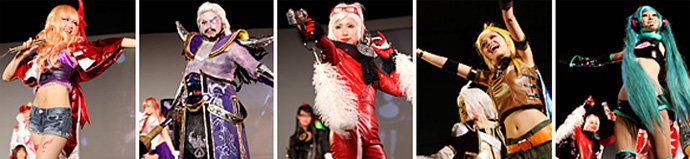

将于一般公开日实施的COSPLAY（角色扮演）计划
在东京电玩展2011的一般开放日中，将“Yasuragi Mall”（幕张国际展览中心里3展厅和4展厅之间的空间）作为COSPLAY区域。
自9月17日（周六）晚上6点30分起在8展厅的活动舞台上，举办“Cosplay Collection Night @TGS”（主办∶Cure株式会社livedoor ）。期待着COSPLAY表演者们到场参加。
Cosplay Collection Night @TGS presented by Cure

由日本最大的COSPLAY社区站点『Cure』所举办的COSPLAY时装秀&舞会。
由提供动感、魅力四射COSPLAY且具有超凡感召力的COSPLAY表演者——Inui Tatsumi 所带来的『Cure Cosplay Collection』，以及结合人气DJ与VJ的组合，即将诞生出游戏音乐和COSPLAY表演者构成的全新空间。
举办概要
| 时 间 | 9月17日（周六）18:30～20:00 |
|---|---|
| 地 点 | 幕张国际展览中心 8展厅 活动舞台 |
| 角色阵容 | 登场的COSPLAY表演者：KANAME☆、KonomiAkira 、Rayna Wang （中国）等，共计约100人左右 DJ：后藤王样、tom2 VJ：RawLight MC: Yunmao Ayakawa |
| 主 办 | （主办∶Cure株式会社livedoor）http://curecos.com/ |
参加办法
如欲参加“Cosplay Collection Night”，需持编号券入场。
编号券将于9月17日（周六）下午1点起在“Yasuragi Mall”（幕张国际展览中心里3展厅和4展厅之间的空间）的“COSPLAY区域”发放。
※东京电玩展2011的入场时间截止到下午4点。如欲参加，请务必在下午4点之前进入东京电玩展2011会场。
※达到特定人数时，编号券将停止发放。
※不限COSPLAY表演者，任何人均可参加。
※当天如有不明之处，请向“Yasuragi Mall”的Cosplay Collection Night编号券发放处进行确认。
入场次序
下午5点展示结束后，请在7展厅的“饮食角”附近的集合处会合。晚上6点左右由将工作人员引导下进入8展厅的活动舞台。
※入场时我们将确认编号券，因此请务必将编号券准备好并置於手边。
※仅限Cosplay Collection Night参加者在17日晚上9点之前能够使用2展厅的COSPLAY更衣室。
※贵重物品请务必随身携带、自行保管。
※会场内如发生贵重物品及随身携带物品的被盗、破损等事件，主办方不承担任何责任。
致COSPLAY表演者们（请大家合作的要点以及注意事项）